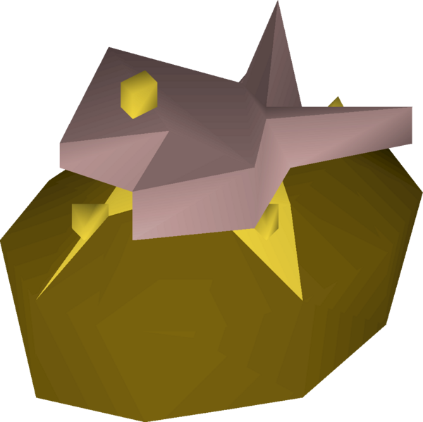

Tuna Potato

A delicious tuna potato from Old School Runescape. This item of food heals your player character for 22 hitpoints and only requires 68 cooking.
This item of food requires the following ingredients:
- Raw Potato
- Bucket of Milk/Pot of Cream
- Raw Tuna
- Sweetcorn
The following items are also required:
A tuna potato can be made by following these steps:
- Cook a raw potato on a range to make a baked potato.
- Churn a bucket of milk or pot of cream into a pat of butter.
- Use the butter on the baked potato to make a potato with butter.
- Cook a raw tuna on a range to make tuna.
- Cook sweetcorn on a range to make cooked sweetcorn.
- Use the tuna, on a bowl, with a knife to make chopped tuna.
- Use the cooked sweetcorn on the chopped tuna to make tuna and corn.
- Use the tuna and corn on the potato with butter to make a tuna potato.
Home